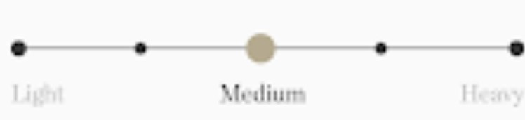

DESCRIPTION
One simple reason we call this our everyday oxford:we
wear them pretty much everysingle day.
MATERIAL
Just the right amount of study for year round wear. soft to the
touch but built for a decade of solid wear. Oxford is a perfectly
versatile fabric that looks just as good pressed as it does pulled
off the back of a chair. While traditional cotton uses 25 percent
of the world's pesticides , our organic cotton doesn't use a drug.
better shirt, responsibly built for the long haul.
GARMENT WEIGHT
Your daily driver, Burlier than the average
buttom up.

|
SPECIFICATIONS
- 6-coe 100% organic cotton.
- Made from our burly roughy oxford.
- Our signature jack button down collar.
- Single rounded chest pocket.
- double -needle felled construction throughout.
- Natural buttons.
- Lock stiched buttons and buttonloads.
- Shorter length to be worn untucked.
- Tailhord fit and high armhole.
- No pleats for easy ironing and clean lines.
- Wash cold and tumble dry low.
- Made in China.
|
ESSENTIAL
This Product is a taylor stich essential that we aim to
always keep in stock. Essentials are our tried and true
products that we wear damn near everyday. If your size
is currently out-of-stock.Please submit your email
address to the"Notify me" tab. we restock essentials
regularly. In stock sizes are available for immediate shipping.
|